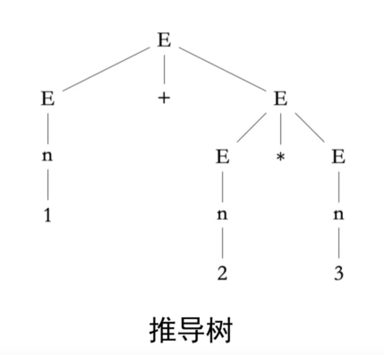

形式化方法
研一选修课程
形式化方法
课程大纲


数学基础
计算复杂性理论
研究的是哪些问题是可以被计算机计算的：
- P问题：存在多项式时间复杂度解法的问题（比如大家常刷的LeetCode算法题）
- NP问题：不确定能否找到多项式时间复杂度解法，但是有多项式时间复杂度的方法来验证答案是否正确的问题(就比如Q:打印出集合$A$的所有子集，现有方法似乎只有穷举法，$2^n$ 的时间复杂度，但是验证某个集合是否是集合$A$的子集可以很快判定出来，因此人们不禁乐观的想(^_^)是否只是人们没有发现多项式的解法，而非数学意义上完全不存在这样的多项式时间算法来求解这样的NP问题)
- NPC问题：NPC完全问题。NPC问题 $\subseteq$ NP问题,而且对于任何 $\forall x \in $ NP问题,都可以在多项式时间内转换或归约成某一个NPC问题。
NPC问题是最近几十年对P?=NP问题比较大的理论突破。人们乐观的认为，只需要解决一个NPC问题，也就可以解决所有的NP问题。但是可惜的是，直到现在，人们还是没有解决出一个NPC问题。所以慢慢的更多的人感觉用永远也无法找到了。
以及证明任意一个NPC问题都可以解决所有的NP问题，但是NPC问题也有难度的区别，因此将目光聚焦于那些更简单的NPC问题会更简单。
上下文无关文法
是一套通过四元组来描述形式系统的符号工具。
四元组： G = {N、 T、 S、 P}
- N是非终结符的有限集合。
- T是终结符的有限集合，且 $\text{N} \cap \text{T} = \varnothing$。
- S是开始符号，且 $\text{S} \in \text{N}$。
- P是产生式的有限集合，每个产生式具有的形式如：$\text{N} \to \alpha, \alpha \in (\text{N} \cup \text{T})^*$
下面我们来分析什么是上下文无关：
假设我们有产生式 $\text{S} \to \text{a} \mid \text{b}$,那么如果我们遇到式子 $\text{aS}$,那么可以替换为 $\text{aS} \to \text{aa} \mid \text{ab}$,同理当我们遇到式子 $Sb$ 时，可以替换为 $\text{Sb}\to\text{ab}\mid\text{bb}$。所以在上下文无关文法中，我们遇到 $\text{S}$ 时，我们无需去关心 $\text{S}$ 的左边和右边是什么符号（这里的a、b其实就是所谓的上下文），直接根据产生式去替换就行。
但是如果我们还有产生式 $\text{aS}\to aa$,那么下次当我们遇到式子 $\text{aS}$ 时，不能直接去替换 $\text{S}$，还得去研究 $\text{S}$ 的上下文。这时候就是上下文有关了。
例1.1 给定文法G
$E ::= E + E \mid E - E \mid E * E \mid E / E \mid (E) \mid n$
其中，终结符 $T$ 的集合为 $\lbrace +,-,*,/,n,()\rbrace$,
并且符号 $n$ 表示整数； 非终结符 $N$ 的集合为 $\lbrace E \rbrace$；
解： 上面其实就是一个标准的上下文无关文法，他包含了我们之前说的四元组：G = {N、 T、 S、 P}，通常我们使用大写字母表示非终结符，小写字母表示终结符。这里的 $E$ 其实充当开始符号S的作用，不必拘泥于字母表示。
这个文法G可表示的集合为整数域上加减乘除的表达式
Q1： 判断表达式 $1+2*3$ 是否是文法G的元素？
我们还可以用推导树来表示刚刚的推导过程：
Q2： 怎么修改文法G的规则使得可以支持四则运算的优先级？
结构化归纳法
归纳法(Induction)是一个非常强大的数学工具。
- 数学归纳法(Mathematical induction)：我们在高中阶段就已经学过了，他其实是建立在natural number上的一套普适原则。在高中阶段我们并没有研究数学归纳法的证明，其实这个涉及到了什么是natural number?我们需要使用纯数中的皮亚诺公理系统（Piano number)来证明这个定理。
- 结构化归纳法(Structural induction)：Do induction on any recursive defined structures。
- 良基归纳(Well-founded induction)：是基于 $2^{nd}$ 数学归纳法而推广到任意线性序的归纳法。
下面我们给出对于结构化归纳法的定义：
对于产生式：
- 基础步：证明命题 P 对 $\alpha_i、1 \leq i \leq m$ 都成立；
- 归纳步：分别假设命题 P 对 $\beta_i A \gamma_i、1 \leq i \leq n$ 中的A成立，分别证明 $P(\beta_i A \gamma_i)$ 成立。
综合上述两个步骤，可证明命题P(A)成立。
例1.2 证明例1.1给定文法表示的集合A，左括号和右括号的数量相等
证明：设用符号(L(A))和(R(A))分别来表示集合A的左括号和右括号的数量。
归纳基础：首先对集合A的元素进行证明，可得 $L(n) = R(n) = 0$，成立。
归纳推理：设 $L(E) = R(E)$ 成立，则：
命题逻辑
语法规则
首先我们用之前学到的上下文无关文法，给出命题逻辑的语法规则：
后面4个是通过连接词连接子命题，而构成复合命题。
证明系统
我们使用自然演绎系统这种形式化的逻辑证明方式系统来作为命题逻辑的证明系统。
首先我们需要先确定一些假定的推理规则，然后利用这些规则，在假定的一个真前提下，得出真结论。这里假定的真前提就是所谓的环境。（我们不关心这些前提实际的真假，只是在推理过程中假定他们为真）
定义 $2.1$（环境） 环境 $\Gamma$ 是由$n，n\ge 0$，个命题构成的命题列表
定义 $2.2$(断言) 断言是由环境 $\Gamma$，和命题 $P$ 构成的元组
定义 $2.3$(证明规则) 证明规则是形如
证明规则由三部分组成：
- 规则的前提：横线上方的 $n$ 条断言
- 规则的结论：横线下方唯一的断言
- Rule-Name：规则的名字，唯一的表示了该规则
推导规则
首先我们来看看最简单的变量规则，它是一条公理，也就是这个规则结论的推出是不需要前提的：
下面是真引入规则：
接下来我们来看看假消除规则：
逻辑意义：维护 “无矛盾则有效” 的体系，它揭示了 “矛盾会摧毁推理有效性” 这一本质，迫使使用者必须保证前提的一致性，否则推理将失去意义。
其他的规则我们也就不一一讲解了，下面给出完整的最基础的$14$条命题逻辑的推理规则：
例2.1 根据上面的推导规则，画出命题 $\vdash P \to \neg \neg P$ 的证明树
从下往上根据上面的14条推理规则去找匹配的进行推导就行，最后推导到公理即可：
SAT问题
SAT（布尔可满足性理论）：given a proposition P, is it satisfiable?
第一个NPC问题(Cook-Levin, 1971)
显然我们可以通过画真值表的方式来得到答案，但是时间复杂度是$O(2^n)$。
那么有没有更快一点的方式让计算机来解决SAT问题呢？
有的有的兄弟，那就是就是DPLL算法：
- CNF（合取范式）
- 解析与传播
- 解析：决策
- 传播：布尔约束传播（BCP）
所有命题公式都可以转换成 CNF 的等价公式。在布尔逻辑中，如果一个公式公式(数理逻辑)是子句的，那么它是合取范式（CNF）的。作为规范形式，它在自动定理证明中有用。
例如，下列所有公式都是CNF:
而下列不是:
上述三个公式分别等价于合取范式的下列三个公式:
等价转换公式：
例2.2 转换命题
$$ (p_1 \land \neg \neg p_2) \lor (\neg q_1 \to q_2) $$ 为CNF命题。
- 消去蕴含。
$$ \begin{aligned} \mathcal{E}\bigl(((p_1 \land \neg \neg p_2) \lor (\neg q_1 \to q_2))\bigr) &= \mathcal{E}(p_1 \land \neg \neg p_2) \lor \mathcal{E}(\neg q_1 \to q_2) \\ &= \bigl(\mathcal{E}(p_1) \land \mathcal{E}(\neg \neg p_2)\bigr) \lor \bigl(\mathcal{E}(\neg q_1) \lor \mathcal{E}(q_2)\bigr) \\ &= (p_1 \land \neg \neg p_2) \lor (\neg \neg q_1 \lor q_2) \\ \end{aligned} $$
- 转换为NNF。
$$ \begin{aligned} \mathcal{N}\bigl(((p_1 \land \neg \neg p_2) \lor (\neg \neg q_1 \lor q_2))\bigr) &= \mathcal{N}(p_1 \land \neg \neg p_2) \lor \mathcal{N}(\neg \neg q_1 \lor q_2) \\ &= \bigl(\mathcal{N}(p_1) \land \mathcal{N}(\neg \neg p_2)\bigr) \lor \bigl(\mathcal{N}(\neg \neg q_1) \lor \mathcal{N}(q_2)\bigr) \\ &= (p_1 \land p_2) \lor (q_1 \lor q_2) \\ \end{aligned} $$
- 等价转换为CNF
$$ \begin{aligned} \mathcal{C}\bigl(((p_1 \land p_2) \lor (q_1 \lor q_2))\bigr) &= \mathcal{D}\bigl(\mathcal{C}(p_1 \land p_2), \mathcal{C}(q_1 \lor q_2)\bigr) \\ &= \mathcal{D}(p_1 \land p_2, \mathcal{D}(q_1, q_2)) \\ &= \mathcal{D}\bigl(p_1, \mathcal{D}(q_1, q_2)\bigr) \land \mathcal{D}\bigl(p_2, \mathcal{D}(q_1, q_2)\bigr) \\ &= \mathcal{D}\bigl(p_1, q_1 \lor q_2\bigr) \land \mathcal{D}\bigl(q_2, q_1 \lor q_2\bigr) \\ &= (p_1 \lor q_1 \lor q_2) \land (p_2 \lor q_1 \lor q_2) \\ \end{aligned} $$构造逻辑
与经典命题逻辑的区别：是否接受排中律 $\vdash P \lor \neg P$ ?
也就会导致我们无法使用反证法来证明命题成立。也就是我们再也无法通过证明 $\neg P$ 成立来证明 $P$ 不成立。
语法规则
$$ P ::= p \mid \top \mid \bot \mid x \mid P \land P \mid P \lor P \mid P \to P $$$\neg P$ 被替换为 $p \to \bot$，而不再出现。
证明系统
同命题逻辑。
推导系统
剔除了双重否定律以及$\neg$的引入和消去规则，其他都同命题逻辑。
谓词逻辑
The Syntax:
$$ \begin{aligned} E &::= x \mid c \mid f(E,\dots,E) \\ R &::= r(E,\dots,E) \\ P &::= R \\ &\phantom{::} \mid \top \\ % 用 \phantom 占位 ::= 的空格 &\phantom{::} \mid \bot \\ &\phantom{::} \mid P \lor P \\ &\phantom{::} \mid P \land P \\ &\phantom{::} \mid P \rightarrow P \\ &\phantom{::} \mid \neg P \\ &\phantom{::} \mid \forall x, P \\ &\phantom{::} \mid \exists x, P \\ \end{aligned} $$$E$:表达式
$x$：变量
$c$：常量
$R$:关系
$r()$：关系算符
$P$：命题
Intuition:
我们把上面的这套公理化系统引入到数论中直观感受一下各项代表着什么：
$$ \begin{aligned} E &::= x \mid \mathbb{Z} \mid E+E \mid E-E \mid \dots \\ R &::= E>E \mid E=E \mid E \le E \\ P &::= R \\ &\phantom{::} \mid \top \\ % 用 \phantom 占位 ::= 的空格 &\phantom{::} \mid \bot \\ &\phantom{::} \mid P \lor P \\ &\phantom{::} \mid P \land P \\ &\phantom{::} \mid P \rightarrow P \\ &\phantom{::} \mid \neg P \\ &\phantom{::} \mid \forall x, P \\ &\phantom{::} \mid \exists x, P \\ \end{aligned} $$ 很明显：上面这套谓词逻辑是数论的一种抽象，这种Syntax是由逻辑学派创建出来的。逻辑学已经有2000多年的历史了，最终确定下来这种形式，其实是对其中的抽象性和具体性的一种平衡。如果太讲究抽象性，那么就无法得出什么meaningful的结论，但如果太讲究具体性，就有可能会偏向于某一理论。谓词逻辑其实就是从数论、集合论、矩阵理论等等中抽象出了一个共性语法规则，他的好处就是如果能正面共性成立，就无需去将每一个底层理论继续证明，就比如哥德尔不完备性定理就是在数理逻辑框架下证明，所以对于任意框架都成立。
推导规则
$$ \frac{\Gamma, x \vdash P}{\Gamma \vdash \forall x. P} \ (\forall I) \quad \quad \quad \quad \quad\quad \quad\quad \frac{\Gamma \vdash \forall x. P}{\Gamma \vdash P[x \mapsto E]} \ (\forall E) $$$$ \frac{\Gamma \vdash P[x \mapsto E]}{\Gamma \vdash \exists x. P} \ (\exists I) \quad \quad \quad \frac{\Gamma \vdash \exists x. P \quad\quad \Gamma, x, P \vdash Q}{\Gamma \vdash Q} \ (\exists E) $$Bound free variables
Bound variables （绑定变量）：默认只绑定最近的一个命题
Free variables （自由变量）
$\forall x, P(x,y)$中，$x$ 就是绑定变量，$y$ 就是自由变量。
其实就可以翻译成类似下面的code：
1 2 3 4int y = 10; int f(int x) { return p(x, y); }$\alpha$ - 重命名
SAT
SAT（可满足性理论）：given a proposition P, is it satisfiable?
SAT for 命题逻辑:
- NPC问题。但是从实践上来说，使用DPLL等算法可以在很合理的时间内求解相当大规模的实际问题
SAT for 谓词逻辑:
- 不可判定/理论上证明不可能有算法可以在合理时间求解/不可解
- 这就引导我们去思考：有没有可能通过我们使用一些特殊的子集，对这个子集进行求解仍然是可解的呢？其实这就是下面我们要讲的theory
theory
SMT
SMT(可解释性模理论)：Satisfiability modulo theory
SAT + Theory Solvers = SMT
SMT的意义在于：CS中的终极大杀器。针对非常非常复杂的问题（如NPC问题），有没有一套通用范式来解决这类难题吗？那就是SMT。如果一个问题很难，我不知道该怎么解，那就上SMT，大概率就有用；如果SMT都没用，那估计你用其他方法也解不了。